Sociología del Género
Clase 6: Sistema multinivel e interseccionalidad
SOL191 · Instituto de Sociología · PUC
Sistema multinivel e interseccionalidad
SOL191 · Clase 6: Sistema multinivel e interseccionalidad
Objetivos de hoy
- Entender el género como un sistema multinivel: individual, interaccional y macro.
- Conocer la interseccionalidad como herramienta analítica, sus orígenes y sus críticas desde América Latina.
- Aplicar ambos marcos a los cuatro grupos de millennials de Risman (2018).
Hasta ahora: en la clase 4 vimos el nivel interaccional (hacer género, creencias) y en la clase 5 el nivel institucional (organizaciones). Hoy los integramos en un solo sistema.
¿Por qué creen que las mujeres ganan menos en Chile?
Respondan en Wooclap:
¿Por qué creen que, en promedio, las mujeres ganan menos que los hombres en Chile?
Escriban libremente todas las razones que se les ocurran.
:::
Parte I: El sistema multinivel de género
Género como estructura multinivel
- Género como sistema de estratificación que tiene implicancias en niveles individuales, interaccionales, y macro de análisis (Risman 2018).
- Las estructuras (Connell 1987, Giddens 1984, Risman 2018):
- Existen fuera de los deseos o preferencias individuales y en parte explican el comportamiento humano
- Restringen la acción pero también permiten la decisión de seguir o rechazar-resistir
- Organizan las posibilidades o el rango de decisión de la agencia
- Relación recursiva entre los individuos y la estructura social
Lo material y lo cultural como componentes de la estructura
Aspectos materiales
Nuestros cuerpos y las reglas que distribuyen el acceso a recursos y las restricciones en un momento histórico particular.
Aspectos culturales
Procesos ideológicos, significados dados a los cuerpos, normas de interacción social, ideologías o creencias ampliamente compartidas.
El sistema multinivel de género
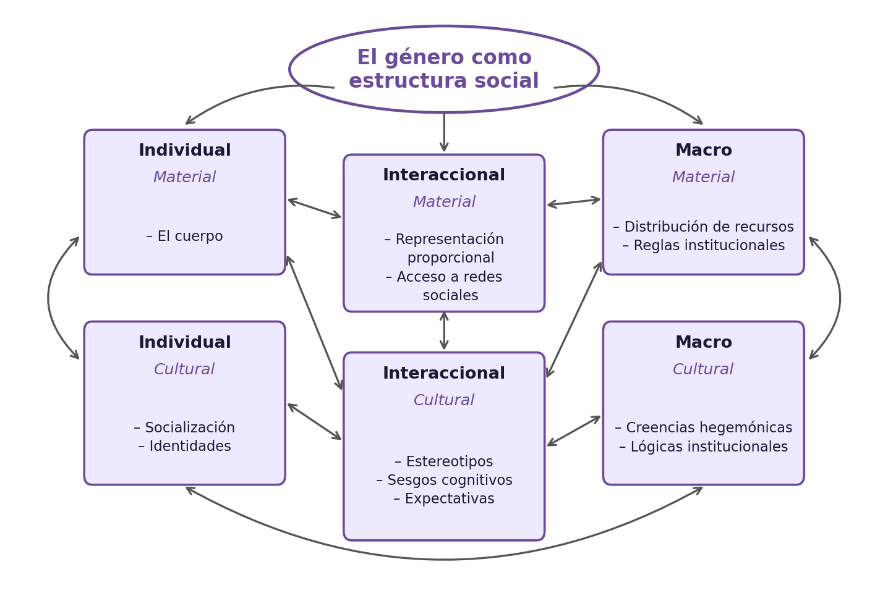
Nivel individual: el cuerpo, la socialización, las identidades
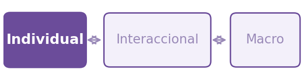
Material
- La experiencia del cuerpo: todes debemos interpretar y operar en nuestro cuerpo.
- Las hormonas y la genética importan, pero hay efectos en ambas direcciones
Nivel individual: el cuerpo, la socialización, las identidades
Cultural
- Noción del yo: cómo la cultura se internaliza.
- La socialización en los primeros años de vida es una manera en que la estructura de género se internaliza en la personalidad y las preferencias.
- La socialización va más allá de la familia: también es el sistema educativo, los pares, los medios.
- ¿Qué tan estables son estas predisposiciones? ¿Cómo se adoptan o resisten en la adultez?
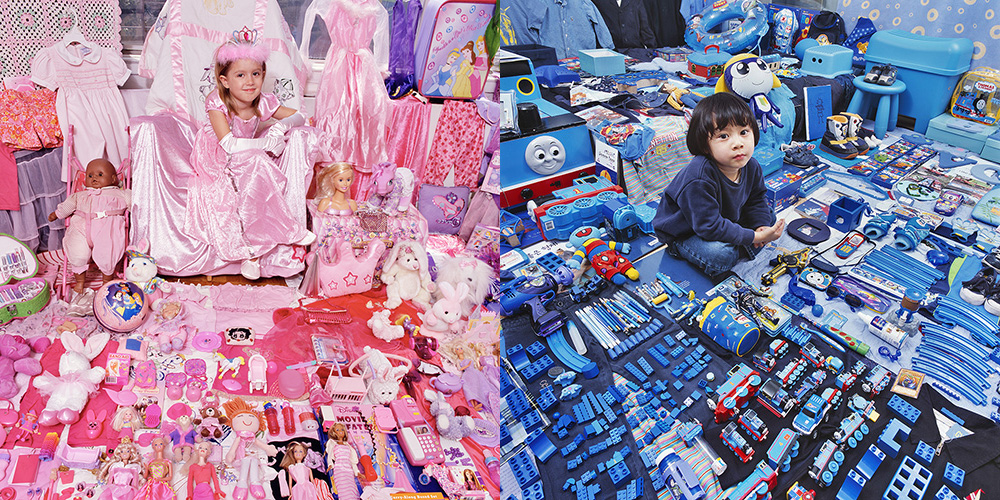
Nivel interaccional: representación, acceso, creencias, expectativas
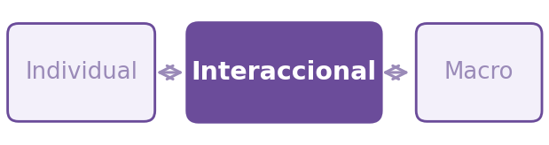
Material
- La representación de nuestro género en cierto contexto y la experiencia de ser “token” (Kanter 1977).
- Desventaja material en acceso a redes y puestos de poder para grupos marginalizados con respecto al género (mujeres, no binarie, trans, entre otros).
Nivel interaccional: representación, creencias, expectativas
Cultural
- Creencias y estereotipos que enmarcan la interacción social y cómo nos enfrentamos a otras personas.
- Expectativas de “hacer género” como es esperado.
- Expectativas de status: se espera que las mujeres tengan una menor competencia, que sean más empáticas, mientras que los hombres más eficaces y con mayor agencia.
- La resistencia es posible y es una forma de ir cambiando la estructura, pero normalmente viene con costos.
Nivel macro: leyes y políticas, organizaciones, creencias culturales
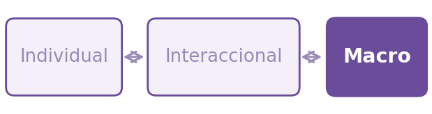
Material
- Sistema legal con diferentes derechos y deberes según género.
- Sistema legal que la mayoría de las veces no reconoce la existencia de géneros no binaries.
- Políticas diferenciadas por género.
- Algunos ejemplos en Chile:
- Régimen matrimonial de sociedad conyugal donde el marido administra bienes (49% de los matrimonios en 2023, frente a 66% en 2001; Registro Civil).
- Sistema basado en género binario.
- Atenuante de adulterio solo para hombres en caso de femicidio.
- Diferencias en ley de posnatal.
Nivel macro: leyes y políticas, organizaciones, creencias
Cultural
- Género como parte del conocimiento cultural y valores históricos.
- Lógicas culturales de género que organizan el ámbito público y privado.
- Estas creencias y actitudes ayudan a explicar parte de la desigualdad: ejemplo de empleo femenino.
- Entidades económicas que tienen definiciones basadas en lógicas de género, como la definición del trabajo que asume una cierta figura de trabajador (el “trabajador ideal”, Acker 1990).
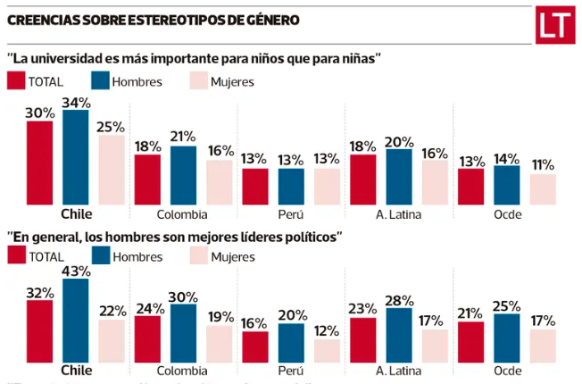
Ejercicio: la brecha salarial
Volvamos a las respuestas de la pizarra: ¿en qué nivel (individual, interaccional o macro) cae cada una? ¿Qué niveles quedaron sin mencionar?
Ejercicio: la brecha salarial
Individual
- Las mujeres se embarazan y amamantan, lo que le genera interrupciones en la trayectoria laboral, afectando su sueldo.
- Las mujeres han sido socializadas para priorizar menos su carrera y dedicarse a la familia, lo que afecta sus decisiones de carrera, afectando su sueldo.
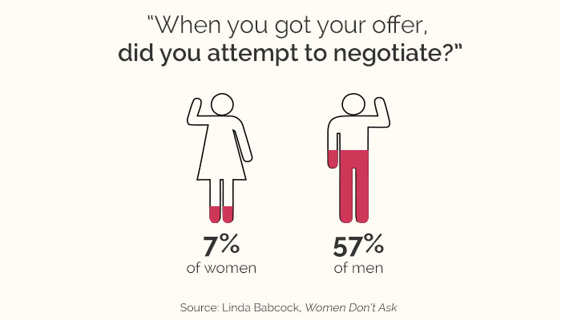
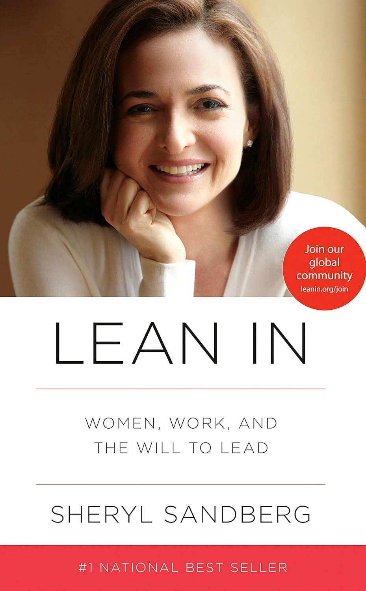
Ejercicio: la brecha salarial (síntesis multinivel)
Individual
- Las mujeres se embarazan y amamantan, lo que le genera interrupciones en la trayectoria laboral, afectando su sueldo.
- Las mujeres han sido socializadas para priorizar menos su carrera y dedicarse a la familia, lo que afecta sus decisiones de carrera, afectando su sueldo.
Interaccional
- Las mujeres muchas veces trabajan en ambientes en que son minoría y esa experiencia dificulta su experiencia, afectando su sueldo.
- Las mujeres experimentan sesgos en sus interacciones laborales, son vistas como menos competentes que los hombres, y esta discriminación afecta su sueldo.
Macro
- En general, la ley de postnatal permite a las mujeres tomar un postnatal mucho más largo que el de los hombres, lo que incide en su trayectoria y afecta su sueldo.
- Las organizaciones tienen lógicas culturales que benefician a los hombres, restringiendo las posibilidades de éxito de las mujeres, afectando su sueldo.
Parte II: Interseccionalidad
¿Qué es la interseccionalidad? (Hill Collins & Bilge 2020)
- Investiga cómo las relaciones de poder se entrecruzan en las relaciones sociales y experiencias individuales.
- Las categorías y sistemas de opresión como el género, la etnia, la clase, la sexualidad, entre otras, están interrelacionadas y son mutuamente influyentes.
- Una herramienta analítica, una forma de comprender y explicar la complejidad de la sociedad y las experiencias humanas.
¿Qué debe considerar un marco interseccional?
- Comprender la desigualdad mediante las interacciones de diferentes categorías de poder.
- Las relaciones de poder se intersectan y dependen del contexto social.
- La interseccionalidad es relacional. Las categorías no son opuestas sino que interconectadas, lo que agrega valor y poder explicativo.
- El análisis interseccional es complejo y profundiza los conocimientos, abriendo nuevas categorías.
- Tiene un compromiso con la justicia social, que puede ser invisibilizada cuando hay reglas que parecen justas cuando no lo son y cuando producen resultados injustos y desiguales.
Genealogía: una idea anterior al concepto (Viveros Vigoya 2016)
- El problema ya lo planteaban mujeres negras, indígenas y latinoamericanas mucho antes de que existiera el término:
- Sojourner Truth (1851): “¿Acaso no soy una mujer?”
- Colectiva del Río Combahee (1977): las opresiones no se pueden separar ni jerarquizar.
- América Latina: Clorinda Matto de Turner (1899); feministas negras brasileñas como Lélia González y Sueli Carneiro (“raza-clase-género”).
- El término lo acuña Kimberlé Crenshaw (1989), a propósito de un caso legal de trabajadoras negras de General Motors.
Kimberlé Crenshaw sobre los orígenes de la interseccionalidad
Video: Kimberlé Crenshaw sobre los orígenes del concepto de interseccionalidad
Suma vs. consubstancialidad (Viveros Vigoya 2016)
Suma (aditiva)
- Cada eje es una cantidad: género + raza + clase.
- Más ejes, más opresión.
- Cada persona queda en un “punto de cruce” fijo.
- Se puede aislar el efecto de cada eje.
- Falla: la posición más desventajosa no siempre es la que “suma más” (ej.: hombres jóvenes y controles policiales).
Consubstancialidad y coextensividad (Kergoat)
- Los ejes son ingredientes de una mezcla: solo se separan para analizarlos.
- Se producen unos a otros.
- Cambian según la historia y el contexto.
- Cada eje cambia el significado de los otros.
- Ejemplo (Viveros, Colombia): la masculinidad “legítima” se mide también con clase y raza.
Pista práctica: si explicas “es por género, y además por clase”, estás sumando. Si explicas cómo la clase cambia lo que significa el género, es consubstancial.
Interseccionalidad y estereotipos (Ridgeway & Kricheli-Katz 2013)
- Cada categoría tiene un prototipo, construido desde el grupo dominante: “mujer” evoca a una mujer blanca; “persona negra” evoca a un hombre negro.
- Quienes no calzan con el prototipo de alguna de sus categorías están “fuera de la diagonal”.
- Estar fuera de la diagonal trae restricciones y, a veces, libertades.
¿Quién calza con el prototipo?
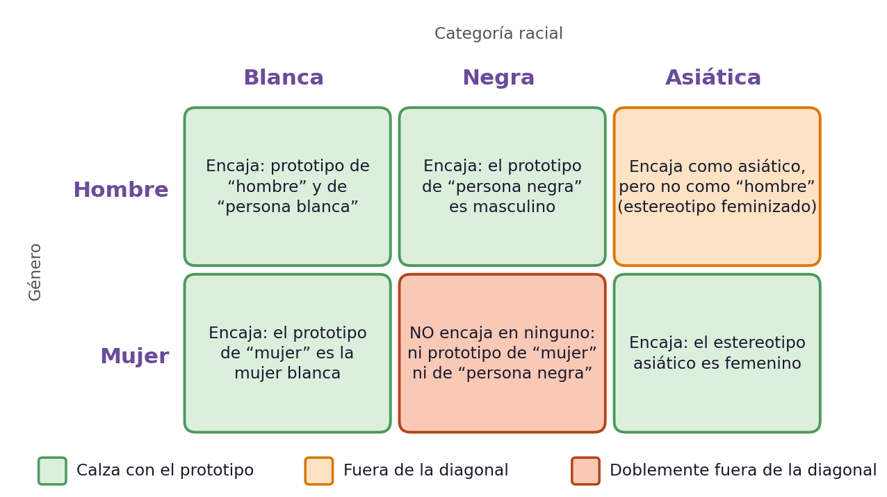
Restricciones y libertades fuera de la diagonal
Restricción: hombres asiáticos
- Calzan con “asiático”, pero no con el prototipo de “hombre”.
- En EE.UU. (2000), 75% de los matrimonios asiático–blanco eran de hombres blancos con mujeres asiáticas.
Libertad: mujeres negras en cargos de mando
- Una jefa negra que actúa con asertividad es evaluada como efectiva y respetada, igual que un jefe blanco.
- Una jefa blanca o un jefe negro con la misma conducta son evaluados peor.
- Su asertividad no desafía directamente ni la jerarquía de género ni la de raza.
Desafíos
- Incluir múltiples dimensiones agrega complejidad
- No siempre muy claro cómo aplicar el concepto en la investigación empírica
- ¿Cómo usar las categorías sin cosificarlas o reducirlas a sólo eso?
- ¿Cómo integrar el análisis de múltiples categorías o dimensiones?
- ¿Cómo cuestionar las categorías en sí mismas y cómo se estudian?
- ¿Cómo incorporar un marco interseccional en los estudios con métodos cuantitativos?
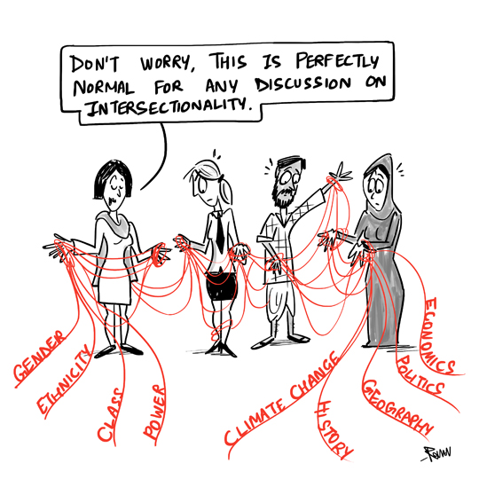
This Photo by Unknown Author is licensed under CC BY-NC-ND
Críticas y aportes desde América Latina (Viveros Vigoya 2016)
- Un concepto no hegemónico en la región: para muchas feministas latinoamericanas no aportaba nada nuevo, porque sus experiencias las obligaban desde antes a enfrentar opresiones simultáneas.
- Un sesgo de origen: los trabajos estadounidenses privilegiaron la intersección raza-género y dejaron la clase como una “mención obligada”.
- Universalismo cuestionado: los feminismos indígenas, afrodescendientes y decoloniales criticaron que el sujeto del feminismo fuera la mujer blanco-mestiza y heterosexual. No se pueden asumir universales las desigualdades de género y raza.
- Propuesta: una interseccionalidad situada y contextualizada, abierta a otras diferencias (nacionalidad, religión, edad, diversidad funcional) y sin repetir el “mantra” raza-clase-género-sexualidad.
Ejemplo de una aplicación cuantitativa reciente: Cech (2022)
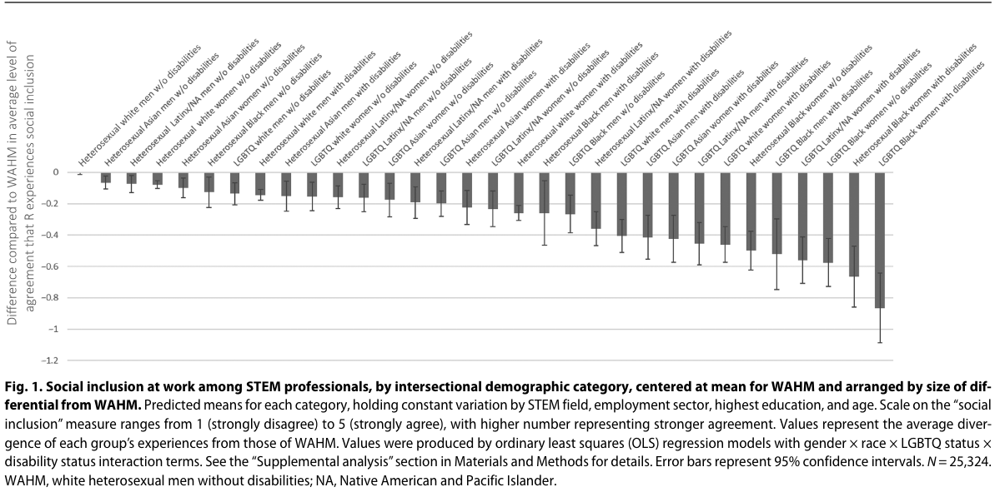
Aplicando el sistema multinivel
- Discutir en el grupo del capítulo asignado para identificar:
- Describir al grupo
- Principales conclusiones sobre cada nivel (individual, interaccional y macro)
- 1 ejemplo por nivel: un caso de una persona, una historia, o una cita explicada.
- Conclusión sobre el grupo: ¿qué les sorprendió? ¿creen que hay algún “grupo” de personas así en Chile hoy?
- ¿Está incorporada la interseccionalidad en el análisis de Risman? Si creen que no, ¿qué faltó?
- Preparar “flash talk”: presentación PPT para presentar al curso (6-8 min).
- Idealmente todos deben exponer alguna parte de la presentación (introducción, conclusión de cada nivel, ejemplo de cada nivel, conclusión final — 8 personas).
- Al final, 3 minutos para preguntas del curso.

Mientras presentan los otros grupos
Completen la guía de una página: los cuatro grupos de Risman × los tres niveles (individual, interaccional y macro).
Anoten, para cada grupo, la idea principal de cada nivel.
Cuatro grupos de millennials
(Tabla/diagrama de la presentación original — no se pudo extraer su contenido de forma automática.)
Evaluación temprana del curso
- Recibir feedback temprano del curso permite identificar aspectos positivos y mejorables a tiempo.
- En Canvas, sección Encuestas de Docencia.
¡Muchas gracias!
SOL191 Sociología del Género · Clase 6